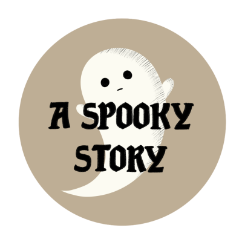

Disponible le 15 octobre
A Spooky Story
Regarder le trailer ici !
L'histoire en bref
"1910, Sud de la France. Claude Bouvier, un opticien hériter d’une riche famille, meurt mystérieusement. Sept ans plus tard, il reprend vie sous forme d’un fantôme, sans même se rendre compte de son apparence. Enfermé dans une maison qui lui semble inconnue, il va essayer de trouver un moyen d’en sortir. Il va donc chercher dans cette maison, sa maison, des souvenirs de sa vie passer. Il va, petit-à-petit, essayé de faire la lumière sur ce qu’il s’est passé.
A Spooky Story est un escape game qui prend le thème de l’enfermement. Ce jeu vous permet de vous questionner dans votre notre rapport à vous-même, votre environnement ainsi que pour toucher notre manière de voir le deuil. En suivant Claude et son chat Maurice, lui aussi devenu un fantôme, le joueur se plonge dans une expérience narrative forte. A Spooky Story vous amène à retrouver le passé de Claude pour accepter sa condition actuelle.
En y réfléchissant bien, et tous d’une manière très différente, nous avons tous déjà été à la place de Claude, se sentant enfermé, incapable d’accepter la dure réalité, en quête de notre identité ou juste incapable de faire un deuil. En questionnant ces thématiques fortes tout en poussant la réflexion du joueur, A Spooky Story devient une expérience dont ses joueurs se rappelleront longtemps, et y trouveront peut-être une belle leçon sur la vie. Suivez Claude et Maurice dans cette quête de sens et aidez-les à trouver le repos dès le 15 octobre !"

Qui sommes nous ?

Lou Friederich
Création et design

Adam B.M
Création et design
Antoine Boullé
Modélisation 3D

Louise Leprivey
Création et design

Eliott Gordon
Communication

Virginie Nguyen
Game programming

Tom Gourdy
Développement web

Julien desquilbet
Communication